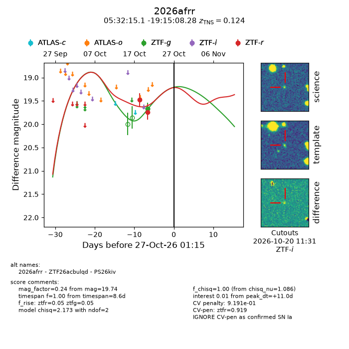
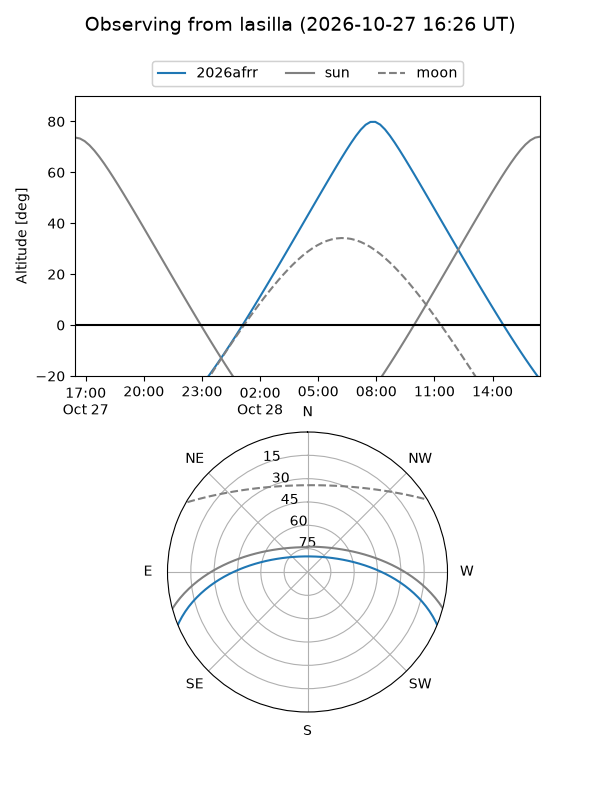
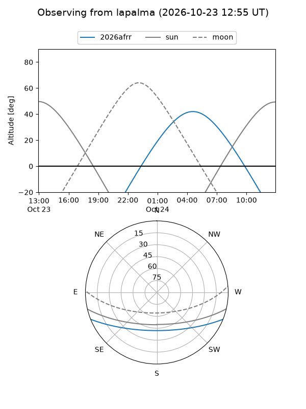
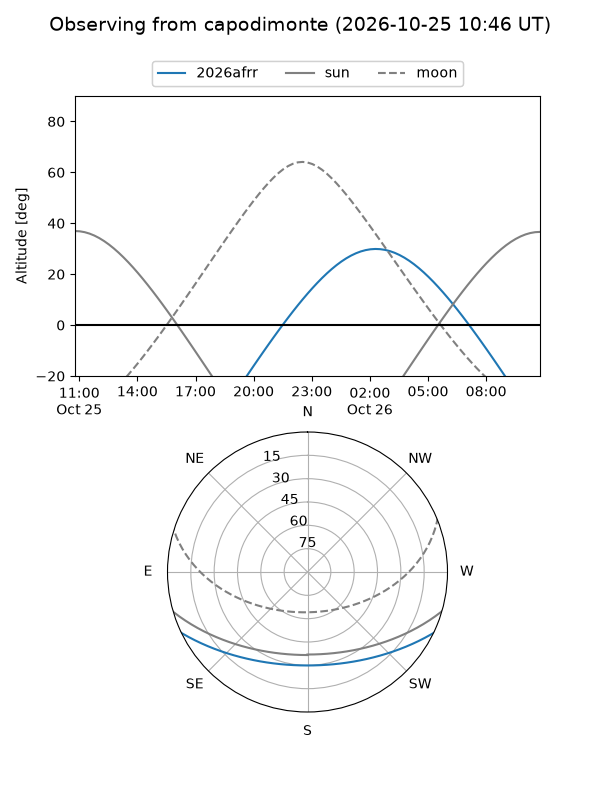
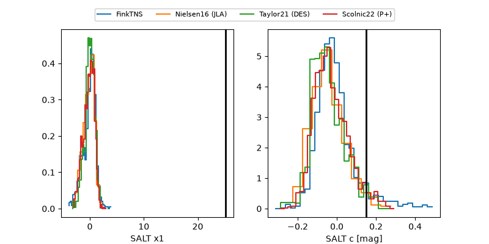

2026afrr
Target 2026afrr at 2026-10-27 01:16
Aliases and brokers:
FINK-ZTF: ztf.fink-portal.org/ZTF26acbulqd
Lasair-ZTF: lasair-ztf.lsst.ac.uk/objects/ZTF26acbulqd
ALeRCE-ZTF: alerce.online/object/ZTF26acbulqd
YSE-PZ: ziggy.ucolick.org/yse/transient_detail/2026afrr
TNS name: wis-tns.org/object/2026afrr
Direct TNS query: direct search
alt names
ZTF26acbulqd (ztf,fink_ztf)
2026afrr (tns,yse)
PS26kiv (panstarrs)
Coordinates:
equatorial (ra, dec) = 83.0628,-19.25230
equatorial (HMS+DMS) = 05:32:15.08,-19:15:08.28
galactic (l, b) = (222.3698,-25.78005)
Flags:
TNS type: SN Ia
TNS redshift: 0.1240
likely cv: !!
CV pen: 0.9190683913975163
peak dt: +11.0
Photometry:
last ztfg=19.67, ztfr=19.74
2 ztfg, 2 ztfr detections
Lightcurve

Visibility



Additional plots
